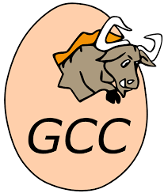
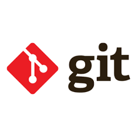
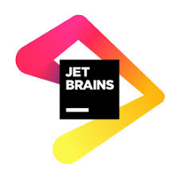
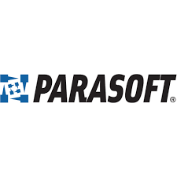
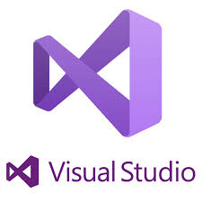

Lower CASE ehk alumise taseme vahendid
Lower CASE ehk alumise taseme vahendid keskenduvad tarkvara praktilisele teostusele ehk nende tööriistade abil saab mudelitest ja skeemidest tegelik tarkvaratoode.
Need tööriistad toetavad andmebaasi struktuuri ja koodi genereerimist, testimist, koodi versiooni- ning konfiguratsioonihaldust ja
samuti pöördprojekteerimist. Lower CASE vahendid on olulised ka vigade leidmiseks ja parandamiseks, sest nende abil on võimalik tarkvara erinevatel etappidel
testida, mis tagab selle kvaliteedi. Paljud alumise taseme vahendid omavad ka automatiseeritud lahendusi, mis aitavad arendajatel vähendada käsitsi tehtavat tööd, mis
omakorda suurendab kogu arendusprotsessi efektiivsust.
Tänapäeval on siiski üha olulisem, et erinevad tööriistad oleksid omavahel integreeritud. Erinevatel arendusetappidel loodud dokumentatsioon, mudelid, koodid, testid jms
peavad olema omavahel seotud, et tagada sujuv ja loogiline arendusprotsess, mistõttu on kaasaegsetel tööriistadel sageli ülesehitus selline, et need sisaldavad nii ülemise
kui ka alumise taseme funktsionaalsust. See võimaldab arendusmeeskonnal töötada ühtsel platvormil, mis seob vajalikud vahendid ühes kohas.




